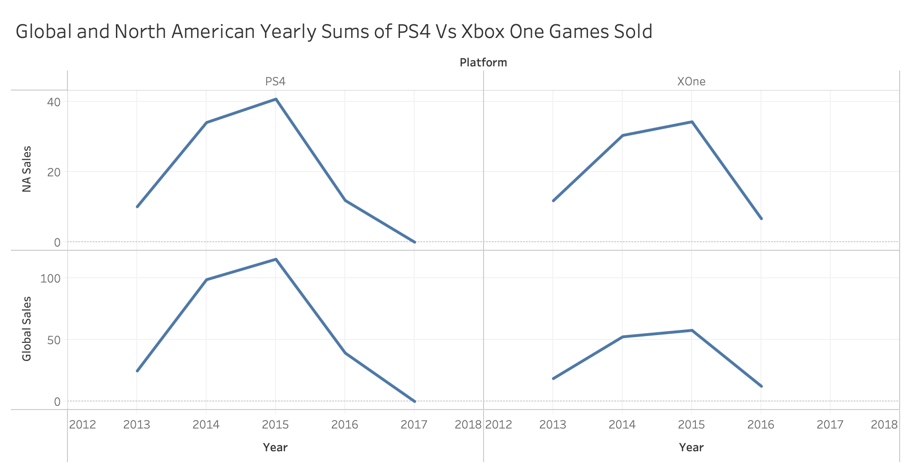

Page Overview
Introduction - overall narrative
For this project, we are going to inllustrate the sale of each genre of gaming in different area in different year by data chart. We hope everyone can see how the changes for the sales of the industry of gaming in each year and have clearly understanding of the development of field of gaming.
Dataset
The dataset contains a list of video games with sales greater than 100,000 copies. It was generated by a scrape of vgchartz.com.
https://www.kaggle.com/gregorut/videogamesales
Dataset size:
12 columns; 16,598 records. 2 records were dropped due to incomplete information.
Relevant columns:
Rank - Ranking of overall sales
Name - The games name
Platform - Platform of the games release (i.e. PC,PS4, etc.)
Year - Year of the game's release
Genre - Genre of the game
Publisher - Publisher of the game
NA_Sales - Sales in North America (in millions)
EU_Sales - Sales in Europe (in millions)
JP_Sales - Sales in Japan (in millions)
Other_Sales - Sales in the rest of the world (in millions)
Global_Sales - Total worldwide sales
Shared processing or filtering:
Possible ways of grouping: by sales in different regions(global, North America, Europe, Japan and other regions), or by published years, or by gaming platform, or by publishers. All the filtering could be done in main-stream data handling softwares.
Navigation
The top memu has home button and a navbar with list of button which each could navigate to different chart to demostrate our idea and thought
Line Graph Prototype

About Us
Steven Rokkala
CS Major, University of San Francisco
Expected Graduation: May 2020
srokkala@dons.usfca.edu
Hello everyone, my name is Steven Rokkala and I love Java and Javascript because of how versatile they are. In my free time, I like to watch and play sports.
Skills
Python
C
Java
JavaScript
HTML
CSS
SVG
SQL
ARM Assembly
Alex Wang
CS Major,
University of San Francisco
Expected Graduation: December 2020
zwang114@dons.usfca.edu
Interested in Data visualization, Brain-Computer Interaction, Game development, and more. Dedicated to using technology to bring more convenience, safety and peace to the world. A Slytherin.
Skills
Python
C
Java
ARM Assembly
R
JavaScript
HTML
CSS
SVG
Paul Ke
CS Major,
University of San Francisco
Expected Graduation: May 2020
yke7@dons.usfca.edu
To prepare for my career, I am pursuing my education degree from the University Of San Francisco and majoring in Computer Science and Marketing. I know theoretical applications and have individual ability to help develop new technology to solve many of the problems associated with the computer industry. For example, I have been completed a search engine project in using the Java program language.I also have an internship as a software engineer. During this internship, I learned how to use react framework and use JavaScript to solve web applcations problems.
Skills
Python
C
Java
Tableau
JavaScript
HTML
CSS
SVG
Responsibilities
All the plans and works would be discussed within the team and assign small actions to each of the team member after a meeting.
Currently the works among the team members needs further decision.